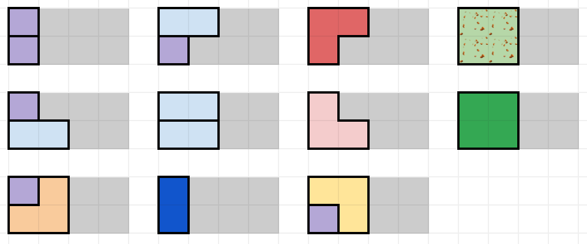

Sweet Tile O’ Mine
Solution Writeup
Contest: TAMa 2023
Problem Idea: Cisco Ortega
Testing: Dylan Dalida, Vincent dela Cruz
Statement: Cisco Ortega
Test Data Preparation: Kevin Atienza
Solution Writeup: Cisco Ortega
Subtask 1
The case \(r=1\)
Let’s consider an even simpler case: What is the answer when \(r=1\)? Note that the only tiles available to us in this case are the \(1 \times 1\) square and \(1 \times 2\) domino.
This is classic. Consider the leftmost empty square—what will be placed there? Either we place a \(1 \times 1\) square there, or we place a \(1 \times 2\) square there. In either case, we are left with the problem of tiling the remaining \(n-1\) columns (if \(1 \times 1\)) or \(n-2\) columns (if \(1 \times 2\))—which is the same as our original problem, but with smaller inputs.  Let \(f(n)\) be the number of ways to tile a \(1\)-row Beast Bar with \(n\) columns. Then, we see that \[
f(n) = f(n-1) + f(n-2)
\] with base cases \(f(0) = f(1) = 1\).
Let \(f(n)\) be the number of ways to tile a \(1\)-row Beast Bar with \(n\) columns. Then, we see that \[
f(n) = f(n-1) + f(n-2)
\] with base cases \(f(0) = f(1) = 1\).
Bonus: Compute the first few values of this sequence. Aren’t these numbers familiar?
The case \(r=2\)
Let’s proceed similarly for the case where \(r=2\). Consider the leftmost empty column—it has to be filled up somehow, so let’s consider all the possible configurations of pieces that completely cover it.
There are eleven such ways. It’s more nontrivial to enumerate all of them (and nontrivial to be certain that we didn’t miss any) but all we have to do is be systematic and split into cases. What piece covers the first row? Is it a \(1 \times 1\), or a \(1 \times 2\), or a \(2 \times 1\), or a rotation of an L, or one of the \(2 \times 2\)s? Carefully consider each possible case one by one.  Notice that some of these solutions “incompletely” cover the second column. Instead of just \(f(n)\), let’s define four functions \(f_{00}, f_{01}, f_{10}\), and \(f_{11}\) such that \(f_s(n)\) determines the number of ways to completely tile a \(2\)-row Beast Bar with \(n\) columns if there is some garbage in the leftmost column (as determined by the subscript)—the first character is 1 if there is garbage in the first row, and 0 otherwise; likewise with the second character.
We can go back and partition those eleven different ways according to the garbage they leave in the following column. 
Thus, we say: \[ f_{00}(n) = 2 f_{00}(n-1) + 2 f_{01}(n-1) + 2 f_{10}(n-1) + 5 f_{11}(n-1). \] We consider all ways to tile the first column, and then we’re left with the task of tiling the rest of the Beast Bar (with maybe some garbage in that first column, which we remember to account for).
Let’s proceed with the other cases. What can you do when there’s a single square of garbage on the bottom row?  which similarly means, \[
f_{01}(n) = f_{00}(n-1) + f_{10}(n-1) + f_{11}(n-1).
\]
which similarly means, \[
f_{01}(n) = f_{00}(n-1) + f_{10}(n-1) + f_{11}(n-1).
\]
By symmetry, the case when there’s a single square of garbage in the top row is similar: \[ f_{10}(n) = f_{00}(n-1) + f_{01}(n-1) + f_{11}(n-1). \]
Finally, if we want to tile \(n\) columns but the entirety of the leftmost column is filled with garbage—well, that’s the same as tiling \(n-1\) columns (with a clean leftmost column): \[ f_{11}(n) = f_{00}(n-1). \]
Note that this tactic of, “We only need to keep track of the garbage in the leftmost column,” works because our tiles all have a width of at most 2 squares—so tiles placed to cover a square in the leftmost column can only affect up to one column over.
If \(c\) is small (and \(c=8\) is small enough that you can even do this by hand), then what we can do is create a table with four rows (labeled 00 and 01 and 10 and 11) and \(c+1\) columns (labeled \(0\) to \(c\)) such that the cell in the row labeled \(s\) and the column labeled \(n\) contains the value \(f_s(n)\). Then, you can populate the table from left-to-right, calculating the values that go in each column by using the values in the previous column.
- What is our base case? What should be the values of \(f_{00}(0)\) and \(f_{01}(0)\) and \(f_{10}(0)\) and \(f_{11}(0)\)?
- Once the table has been fully populated—which cell contains our answer?
Subtask 2
The case \(r=3\)
The case for when \(r=3\) is pretty much the same as the \(r=2\) case, with the only exception being that we now have to keep track of \(2^3 = 8\) possible states for how garbage is placed in the leftmost column.
Also, there are even more different ways to cover the first column, but it’s still not too hard to enumerate all of them by hand. Again, just be very systematic with your casework.
- Suppose we place a \(1 \times 1\) square in the topmost row. Now, exhaust all the ways to place tiles in the remaining rows...
- Suppose we place a \(1 \times 1\) square in the next row. Now, exhaust all the ways to place tiles in the remaining row...
- After that, suppose we place a \(1 \times 2\) domino in the next row. Now, exhaust all the ways to place tiles in the remaining row...
- After that, suppose we place a \(2 \times 1\) domino in the next row. Now, exhaust all the ways to place tiles in the remaining row...
- ...
- After that, suppose we place a \(1 \times 2\) square in the topmost row. Now, exhaust all the ways to place tiles in the remaining rows...
- ...
It may seem like a lot of work, but I promise that with careful bookkeeping and meticulous enumeration, you should be done with just a few minutes of active effort. Don’t underestimate how much time and grief can be saved by just being organized!
Here, we’ve decided to help you get started! These are all the ways to cover the first column with tiles, assuming the first column has no garbage, and we place a \(1 \times 1\) square in the topmost row.  You’ll find that the “has no garbage in the first column”
You’ll find that the “has no garbage in the first column” 000 case will take up the bulk of your work. When there is garbage in the first row, your options for placing tiles will get severely more limited, and you’ll finish enumerating all the possibilities much more quickly.
Anyway, when you’re done, you can construct eight interdependent recurrence relations \(f_{000}\), \(f_{001}\), \(f_{010}\), \(f_{011}\), \(f_{100}\), \(f_{101}\), \(f_{110}\), and \(f_{111}\), similarly to what we did for subtask \(1\).
Then, again construct the \(2^3 \times (c+1)\) table. Populate the table from left-to-right, computing the values that go in each column using the values in the previous column. Of course, you should use a computer to do this instead of doing it by hand, perhaps representing the table as \(8\) lists. Because \(8 \times (10^6+1) < 10^8\), we will still comfortably be within our \(1\) minute time limit.
Subtask 3
The eight functions \(f_{000}\), \(f_{001}\), \(f_{010}\), \(f_{011}\), \(f_{100}\), \(f_{101}\), \(f_{110}\), and \(f_{111}\) are so interdependent that it makes sense to “bundle” them together into one vector.
With the language of vector addition and scalar multiplication, you can check that the eight recurrence relations can be written in the following way: \[ \small \begin{bmatrix} f_{000}(n+1) \\ f_{001}(n+1) \\ f_{010}(n+1) \\ f_{011}(n+1) \\ f_{100}(n+1) \\ f_{101}(n+1) \\ f_{110}(n+1) \\ f_{111}(n+1) \end{bmatrix} = f_{000}(n)\!\begin{bmatrix} 3 \\ 2 \\ 1 \\ 1 \\ 2 \\ 1 \\ 1 \\ 1 \\ \end{bmatrix} + f_{001}(n)\!\begin{bmatrix} 3 \\ 0 \\ 1 \\ 0 \\ 2 \\ 0 \\ 1 \\ 0 \\ \end{bmatrix} + f_{010}(n)\!\begin{bmatrix} 3 \\ 2 \\ 0 \\ 0 \\ 2 \\ 1 \\ 0 \\ 0 \\ \end{bmatrix} + f_{011}(n)\!\begin{bmatrix} 7 \\ 1 \\ 1 \\ 0 \\ 5 \\ 1 \\ 1 \\ 0 \\ \end{bmatrix} + f_{100}(n)\!\begin{bmatrix} 3 \\ 2 \\ 1 \\ 1 \\ 0 \\ 0 \\ 0 \\ 0 \\ \end{bmatrix} + f_{101}(n)\!\begin{bmatrix} 3 \\ 0 \\ 1 \\ 0 \\ 0 \\ 0 \\ 0 \\ 0 \\ \end{bmatrix} + f_{110}(n)\!\begin{bmatrix} 7 \\ 5 \\ 1 \\ 1 \\ 1 \\ 1 \\ 0 \\ 0 \\ \end{bmatrix} + f_{111}(n)\!\begin{bmatrix} 11 \\ 1 \\ 1 \\ 0 \\ 1 \\ 0 \\ 0 \\ 0 \\ \end{bmatrix}. \] Let \(T\) be a function that accepts an \(8\)-element vector and outputs another \(8\)-element vector, defined as: \[ \begin{align*} T\left(\begin{bmatrix} v_0 \\ v_1 \\ v_2 \\ v_3 \\ v_4 \\ v_5 \\ v_6 \\ v_7 \\ \end{bmatrix} \right) = v_0 \begin{bmatrix} 3 \\ 2 \\ 1 \\ 1 \\ 2 \\ 1 \\ 1 \\ 1 \\ \end{bmatrix} + v_1 \begin{bmatrix} 3 \\ 0 \\ 1 \\ 0 \\ 2 \\ 0 \\ 1 \\ 0 \\ \end{bmatrix} + v_2 \begin{bmatrix} 3 \\ 2 \\ 0 \\ 0 \\ 2 \\ 1 \\ 0 \\ 0 \\ \end{bmatrix} + v_3 \begin{bmatrix} 7 \\ 1 \\ 1 \\ 0 \\ 5 \\ 1 \\ 1 \\ 0 \\ \end{bmatrix} + v_4 \begin{bmatrix} 3 \\ 2 \\ 1 \\ 1 \\ 0 \\ 0 \\ 0 \\ 0 \\ \end{bmatrix} + v_5 \begin{bmatrix} 3 \\ 0 \\ 1 \\ 0 \\ 0 \\ 0 \\ 0 \\ 0 \\ \end{bmatrix} + v_6 \begin{bmatrix} 7 \\ 5 \\ 1 \\ 1 \\ 1 \\ 1 \\ 0 \\ 0 \\ \end{bmatrix} + v_7 \begin{bmatrix} 11 \\ 1 \\ 1 \\ 0 \\ 1 \\ 0 \\ 0 \\ 0 \\ \end{bmatrix}. \end{align*} \] Rewriting what has already been written: \[ \begin{align*} T\left( \begin{bmatrix} f_{000}(n) \\ f_{001}(n) \\ f_{010}(n) \\ f_{011}(n) \\ f_{100}(n) \\ f_{101}(n) \\ f_{110}(n) \\ f_{111}(n) \end{bmatrix} \right) = \begin{bmatrix} f_{000}(n+1) \\ f_{001}(n+1) \\ f_{010}(n+1) \\ f_{011}(n+1) \\ f_{100}(n+1) \\ f_{101}(n+1) \\ f_{110}(n+1) \\ f_{111}(n+1) \end{bmatrix}. \end{align*} \] In a sense, \(T\) is a “transition” function. When we apply it to a vector containing our bundle of \(f_{s}(n)\) functions, it “advances all of them forward” by \(+1\). To get the answer that we want: \[ \begin{align*} \underbrace{T(T(T\dots T}_{c~\text{times}}\left( \begin{bmatrix} f_{000}(0) \\ f_{001}(0) \\ f_{010}(0) \\ f_{011}(0) \\ f_{100}(0) \\ f_{101}(0) \\ f_{110}(0) \\ f_{111}(0) \end{bmatrix} \right)\dots ))) = \begin{bmatrix} f_{000}(c) \\ f_{001}(c) \\ f_{010}(c) \\ f_{011}(c) \\ f_{100}(c) \\ f_{101}(c) \\ f_{110}(c) \\ f_{111}(c) \end{bmatrix}. \end{align*} \]
If you’re aware of linear transformations (vector-functions that have the form of \(T\)), then you know that \(T\) can be written as a matrix, and the function \[ \underbrace{T\circ T\circ T\circ \dots \circ T}_{c~\text{times}} \] can be evaluated in \(\approx \log_2 (c)\) matrix multiplications using any fast exponentiation algorithm.
Subtasks 4 & 5
For \(r=7\), just do the same thing that we had done previously, except the difference is that you should use code to determine the transition function \(T\), instead of doing it by hand. The idea is still the same though—try placing some tile in the topmost row, recurse on the remaining rows, then backtrack and try placing a different tile there (and again recursing on the remaining rows). This idea is called recursive backtracking.
Each matrix multiplication takes roughly \((2^7)^3\) steps, and we can still afford to do \(\log_2(10^{18})\) such operations for Subtask 5.